Казвам се Гергана и съм художник. Завършила съм Художествената Гимназия в София, после Художествената Академия – специалност Стенопис, бакалавър и магистър. По време на обучението си започнах да се реализирам професионално в сферата
на църковното изобразително изкуство, за това завърших и една магистратура в АМТИИ Пловдив - Църковна Живопис. Така се научих да работя в различните стенописни техники – секо, фреско, мозайка. Работила съм по стенописите на няколко
храма, в екип с ръководител, а и сама по свой проект, в България и в чужбина. Имам реализирани светски стенописи в различни по предназначение и важност обществени сгради. Работя в сферата на иконописта, имам участия в общи и собствени
изложби.Член съм на Съюза на Българските Художници, секция Монументални Изкуства.
Амбицирана съм за работа, както по самостоятелни проекти, така и в колективни.


 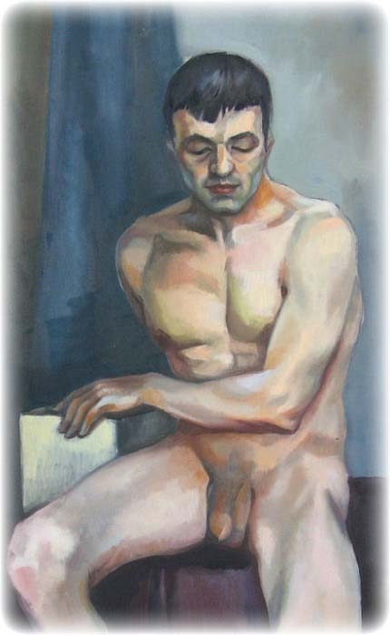
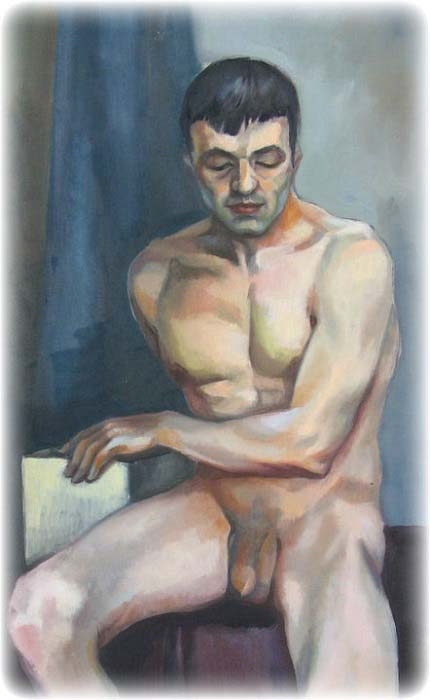
 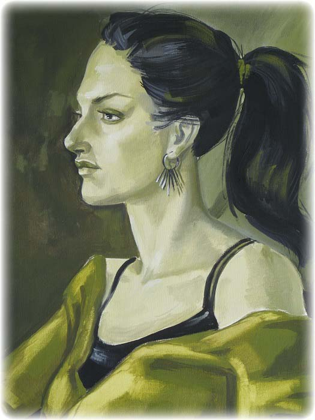
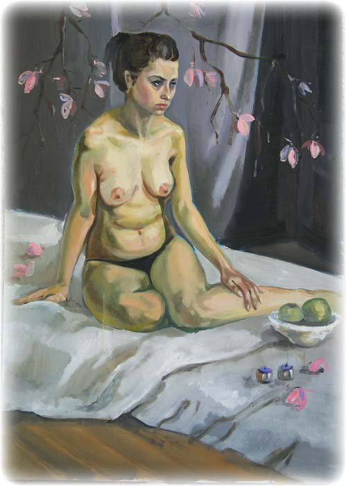
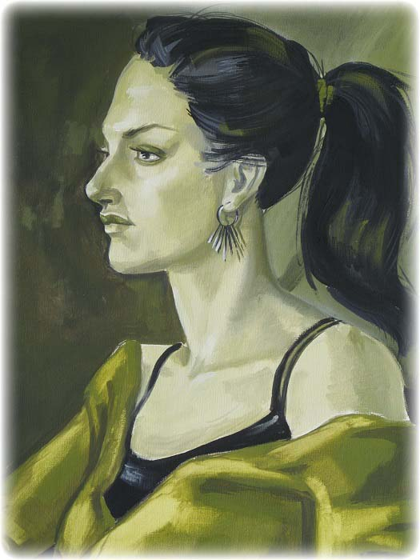
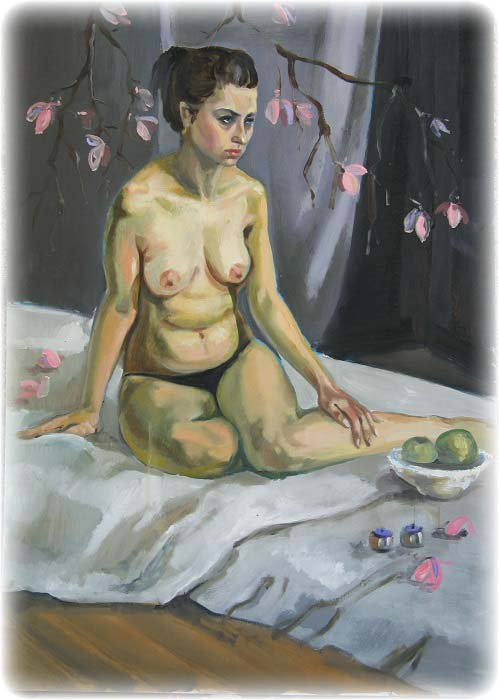

 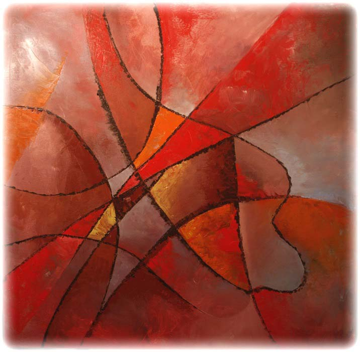
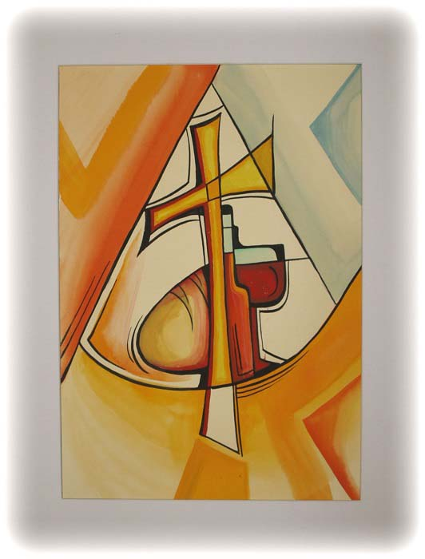
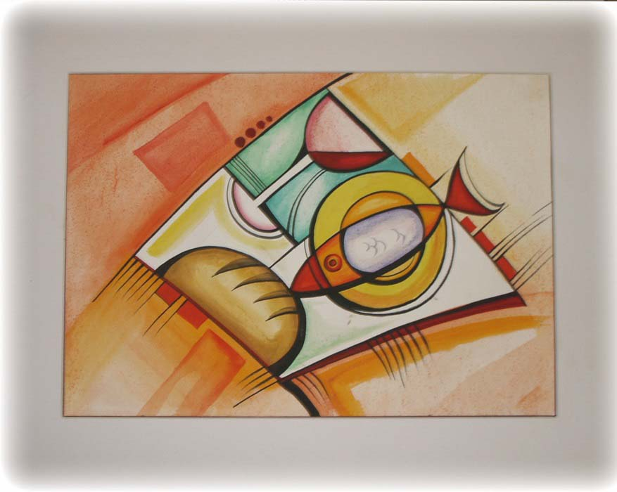
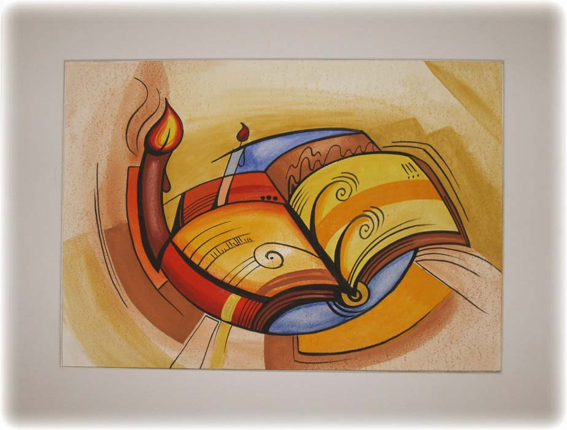
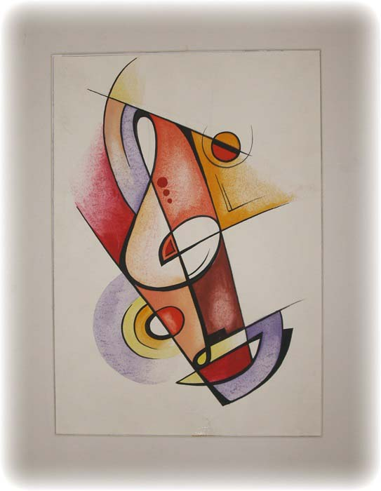
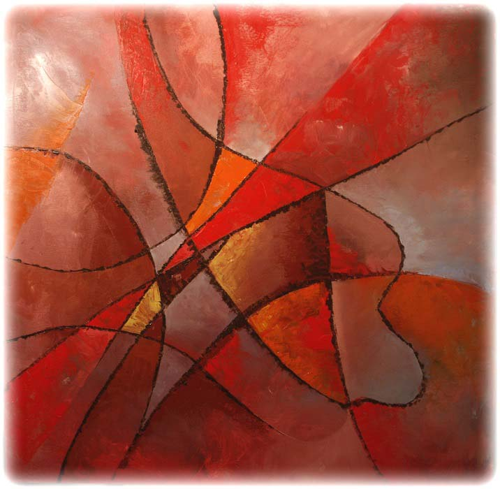
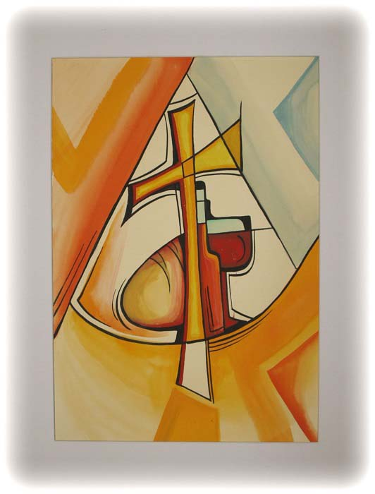
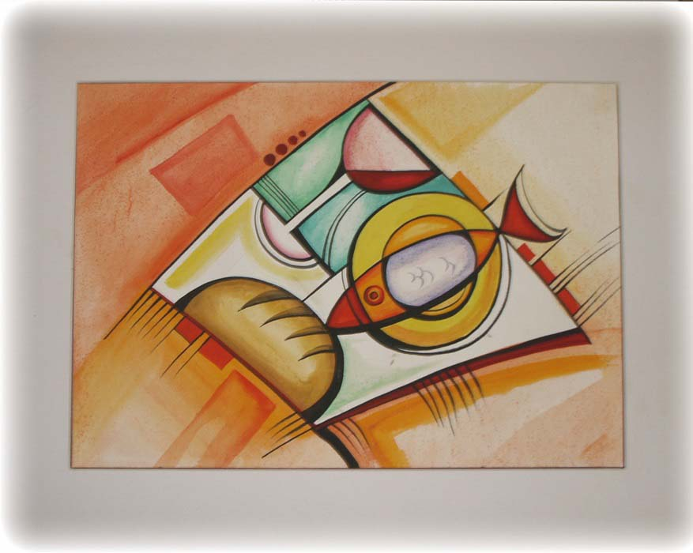
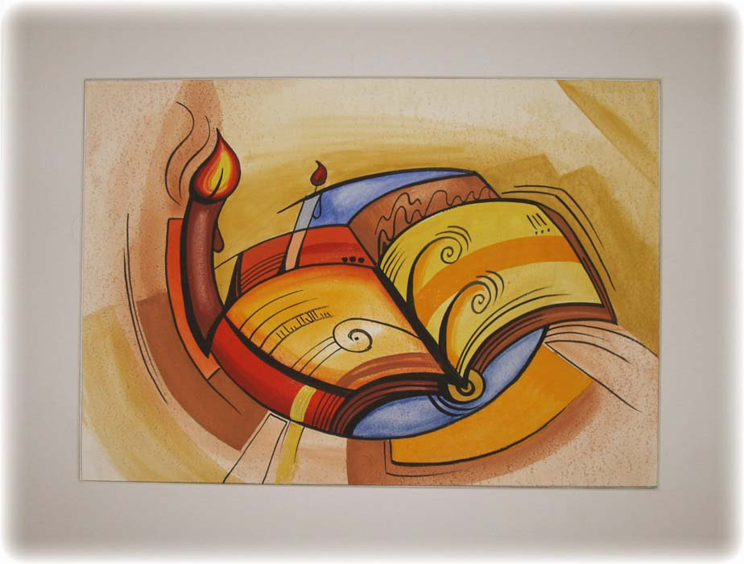
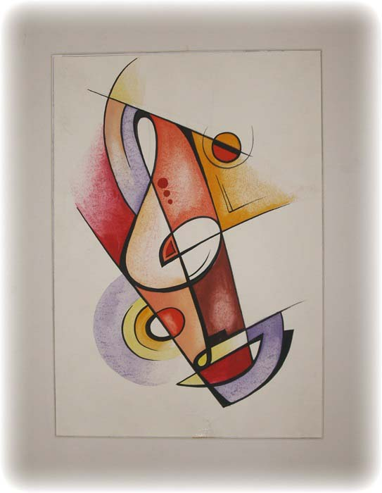